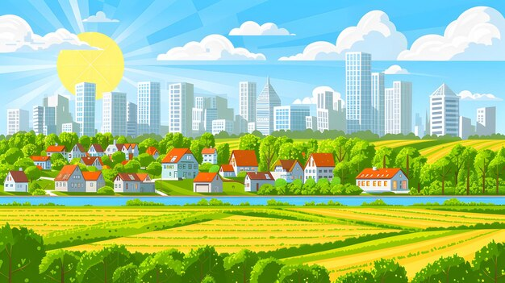

Campo a cidade colendo aportunidades
É um tema complexo que aborda a migração de pessoas das áreas rurais para as urbanas em busca de melhores oportunidades de vida.
Esse fenômeno é uma característica marcante da história humana e tem impactos significativos na sociedade, economia e meio ambiente.
No contexto do desenvolvimento econômico, a migração do campo para a cidade muitas vezes é impulsionada pela busca de emprego, educação, acesso a serviços de saúde e melhores
condições de vida. As áreas urbanas oferecem uma variedade de oportunidades de trabalho em setores como indústria, comércio, serviços e tecnologia, que podem não estar disponíveis
nas áreas rurais. No entanto, a migração para áreas urbanas também apresenta desafios, como a falta de moradia adequada, infraestrutura deficiente, desemprego, pobreza, poluição e congestionamento
urbano.
<
Esses problemas podem resultar em condições de vida precárias e desigualdades sociais.
Além disso, a migração em massa do campo para a cidade pode ter impactos ambientais negativos, como a degradação do meio ambiente, perda de biodiversidade, aumento da demanda porrecursos naturais e emissões de poluentes.
Para lidar com os desafios da migração campo-cidade e colher as oportunidades que ela oferece, é importante adotar abordagens integradas e sustentáveis que promovam o desenvolvimento
econômico, social e ambiental. Isso inclui investimentos em infraestrutura urbana, habitação acessível, educação e capacitação profissional, planejamento urbano sustentável, preservação
ambiental e promoção da agricultura sustentável nas áreas rurais.
"Campo à Cidade: Colhendo Oportunidades" destaca a complexidade da migração rural-urbana e a necessidade de políticas e práticas que promovam um desenvolvimento equilibrado e
inclusivo, visando melhorar a qualidade de vida tanto nas áreas urbanas quanto rurais.